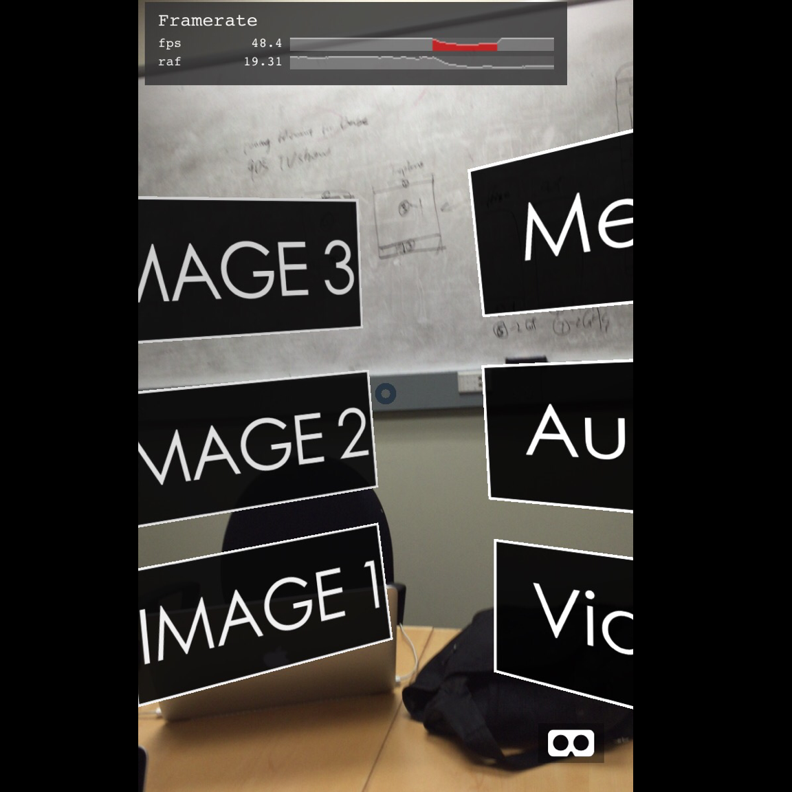
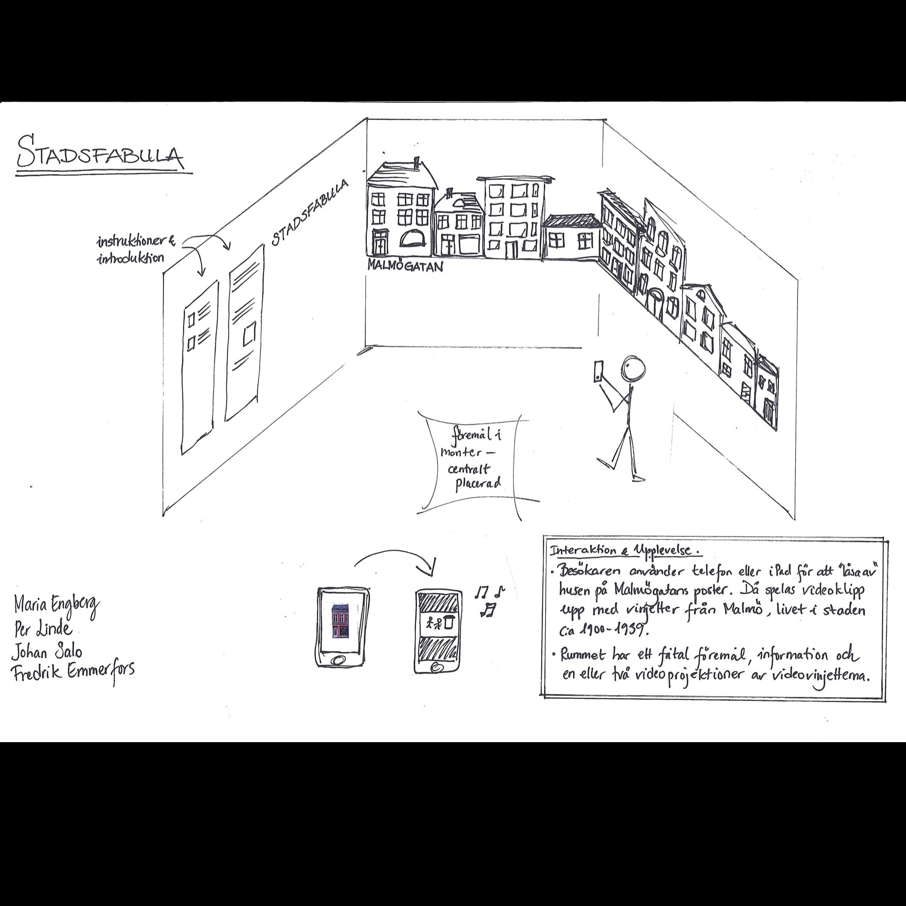

City Fables
|
Argon is an open-source javascript library and web browser developed my Georgia Tech's Augmented Enviornments Lab. Argon allows for the creation of augmented reality web pages and integrates a variety of other libraries and tools, such as Aframe, Vuforia, and Twine. More information about Argon can be found at Argonjs.io. |
|
City fables is a project we worked on for a year in collaboration with Malmo University. We worked to create an AR experience that took historical footage, images, and audio and created an interactive museum piece. Visitors could open the website and look at images on the wall through their phone which would trigger various media files to appear. |
|
In working on the project we learned how to use Aframe, Vuforia, and Twine, as well as gained HTML and JavaScript coding experience. We also thought a lot about how users can interact with AR apps and webpages, developing a number of different solutions. One solution was to use a reticle, which meant users never actually had to touch their phone screen and simply had to move their phone about to interact with the app. |
|
We are working on a new project, currently dubbed "The Table". It is a multi-user, kind of social media tool, that allows users to add and edit 3d objects to real world scenes, either in the form of panoramas from google maps or the live camera feed. |
|

One of the iterations of our "hands-free" menus

A diagram of the museum exhibit setup

A working prototype of "The Table"
|
{kind=link}